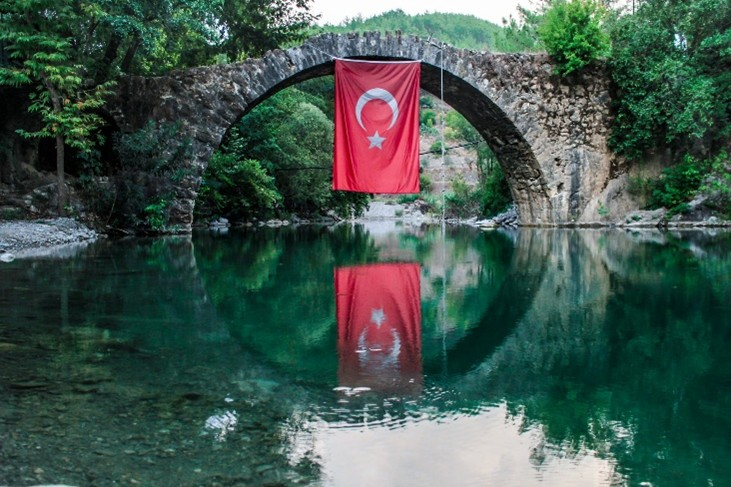
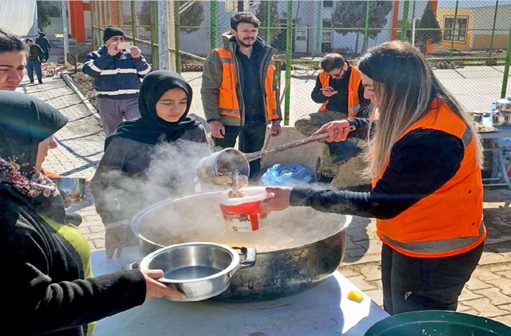

The effects of Turkey’s water crisis are being felt across every sector of society—from agriculture to urban life. The shortage of clean, accessible water is no longer a distant threat—it’s a present reality disrupting communities and ecosystems.
Symbolic representation of Turkey’s relationship with its vital natural water resources.
Environmental Impact: Lakes, rivers, and wetlands are drying up. Biodiversity is under threat as habitats shrink and water temperatures rise, affecting aquatic life and surrounding ecosystems.
Agricultural Struggles: Farmers face dwindling irrigation supplies, leading to reduced crop yields and lost income. Regions that depend on agriculture for their economy are seeing rising instability and rural depopulation.
Urban Water Stress: Cities across Turkey are experiencing more frequent water cuts, rationing, and reliance on tanker trucks. As demand grows, access to reliable and safe drinking water is becoming more uncertain.
Relief efforts become critical as water scarcity amplifies food insecurity and public health risks.
Social & Economic Consequences: Water scarcity fuels inequality. Low-income communities often bear the brunt of water shortages, and businesses struggle with rising utility costs, threatening economic stability.
The water crisis is more than an environmental issue—it’s a humanitarian and economic emergency that demands collective action.